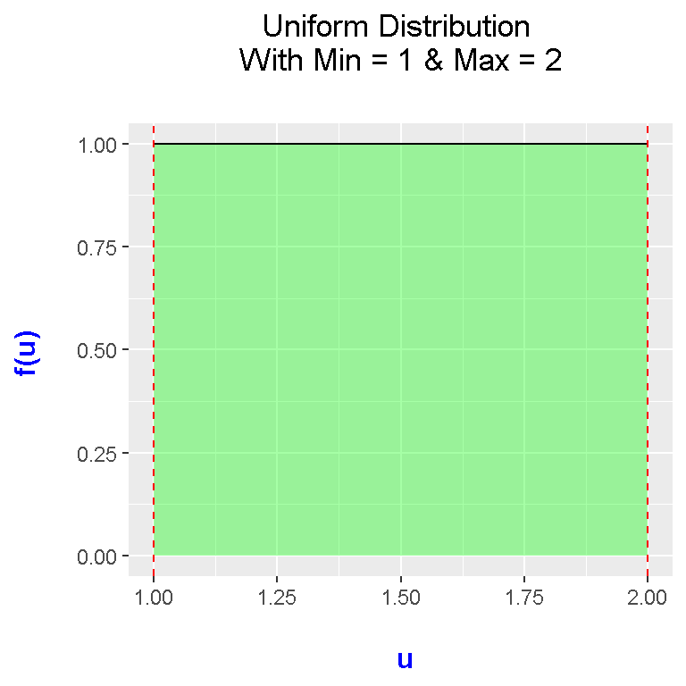
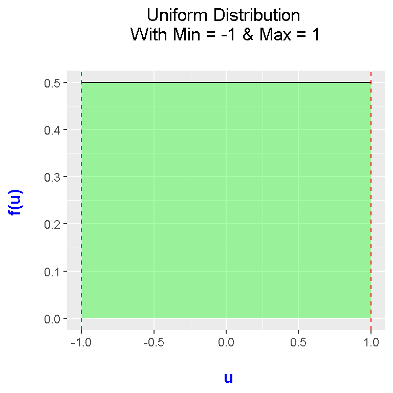

Plotting Uniform Distributions In R With ggplot2
Hello there. This page is about plotting uniform distributions in R with the ggplot2 package. The approach I use is through making a function where the user specifies the minimum and maximum of the uniform distribution and then the function outputs the associated uniform distribution plot.
Creating The Uniform Distribution Plotting Function
This time around, I have decided to put ggplot2 code inside a function as the uniform distribution varies depending on the values of a and b (minimum and maximum values). The function is designed to adapt to different a and b values.
If the ggplot2 package is not installed into R/RStudio, type in install.packages("ggplot2") the following to install ggplot2.
In R, load in the ggplot2 package by typing in library(ggplot2).
Recall that functions in R have the form of:
function_name <- function(arg1, arg2, ..., argn){
put code here
}
In the code below, I have the arguments as a and b for the uniform distribution and the xvals line sets the range for the x-values. The ggplot2 lines of codes takes in xvals as the xlimits for the plot, and the uniform distribution plots and labels adjusts to the a and b values.
# Plotting Uniform Distributions In R With ggplot2
# Using the ggplot package to plot various probability distributions.
# install.packages("ggplot2")
library(ggplot2)
## Uniform Distribution - Unif(a, b) or Unif(min, max):
uniform_Plot <- function(a, b){
xvals <- data.frame(x = c(a, b)) #Range for x-values
ggplot(data.frame(x = xvals), aes(x = x)) + xlim(c(a, b)) + ylim(0, 1/(b - a)) +
stat_function(fun = dunif, args = list(min = a, max = b), geom = "area",
fill = "green", alpha = 0.35) +
stat_function(fun = dunif, args = list(min = a, max = b)) +
labs(x = "\n u", y = "f(u) \n",
title = paste0("Uniform Distribution \n With Min = ", a, " & Max = ", b, " \n")) +
theme(plot.title = element_text(hjust = 0.5),
axis.title.x = element_text(face="bold", colour="blue", size = 12),
axis.title.y = element_text(face="bold", colour="blue", size = 12)) +
geom_vline(xintercept = a, linetype = "dashed", colour = "red") +
geom_vline(xintercept = b, linetype = "dashed", colour = "red")
}
The two stat_function() addons are for creating the probability density line and for the colour fill under the line. I have used \(\dfrac{1}{(b - a)}\) as the upper limit for the y-limit as \(\dfrac{1}{(b - a)}\) is the “height” of the uniform distribution.
In labs(), I have the paste0() function for title to adjust depending on the values of a and b. Having paste0() be adjustable allows for adjustable titles.
The two red geom_vlines are included to highlight the boundaries of the uniform distributions at a and b.
Examples
Once this function is set up in R, you can make function calls with your choice of values for a and b.
## Test Cases:
# Plot uniform distribution with min = 1, max = 2
uniform_Plot(a = 1, b = 2)
# Plot uniform distribution with min = 4, max = 4.5:
uniform_Plot(a = 4, b = 4.5)# Plot uniform distribution with min = -1, max = 1:
uniform_Plot(a = -1, b = 1)
### Standard Uniform Distribution Where it's a uniform dist. with a = 0, b = 1:
uniform_Plot(a = 0, b = 1)